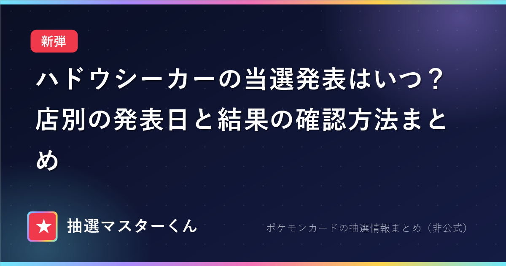

ハドウシーカーの抽選に応募したけれど、結果はいつ、どこで分かるの？――発売日（11月27日）が近づき、気になっている人も多いはずです。
当選発表の日と確認方法は、お店ごとにばらばらです。メールが来るお店もあれば、アプリを自分で開かないと分からないお店、当選した人にしか連絡が来ないお店もあります。この記事では、当サイトの抽選データから、ハドウシーカーの当選発表日と結果の確認方法を店ごとにまとめました。
この記事の要点
- ハドウシーカーの当選発表は11月24日（火）〜25日（水）に集中している
- ポケモンセンター各店（店頭）は11月25日12時以降、当選者だけにLINEミニアプリで連絡
- 「当選者だけに連絡」のお店が多く、連絡が来なければ落選と考えるのが基本
- 当選したら購入期間（多くは11月27日〜29日）と持ち物（本人確認書類など）をすぐ確認
- まだ受付中の抽選（ブックオフ・バトロコ・駿河屋の各店、ホビーステーションの再販分など）もある
ハドウシーカーの当選発表日（店別）
当サイトに載っているハドウシーカーの抽選のうち、当選発表日が分かっているものを日付順に並べました（11月24日12時時点）。
| お店 | 当選発表 | 結果の確認方法 |
|---|---|---|
| 駿河屋（通販） | 11月23日（月） | マイページとメールでお知らせ |
| PLANT（13店舗） | 11月23日（月）〜25日（水） | 当選者だけにメールで連絡 |
| 晴れる屋2 各店 | 11月24日（火）予定 | お店の案内で確認 |
| フルコンプ（9店舗から1店） | 11月24日（火）〜25日（水） | 当選者だけにLivePocketからメールで連絡 |
| トイコンプ | 11月24日（火）予定 | お店の案内で確認 |
| トレカステーション 一部店舗 | 11月24日（火）予定 | お店の案内で確認 |
| ポケモンセンター各店（店頭の購入時間帯抽選） | 11月25日（水）12時以降 | 当選者だけにLINEミニアプリのお知らせで連絡 |
| ホビーオフ 一部店舗 | 11月25日（水）15時以降 | 各店の告知で確認 |
| お宝創庫グループ | 11月25日（水）ごろ | お宝創庫グループアプリ内で確認 |
| トレカチャンピオン 各店 | 11月25日（水） | 当選者だけに各店のXのDMで連絡 |
| ゲームアーク・宝島 各店 | 11月25日（水） | お店の案内で確認 |
| HMV トレカショップ各店 | 11月25日（水）予定 | お店の案内で確認 |
| Joshin 店頭 | 11月27日（金）から | お店の案内で確認 |
| ホビーステーション（再販分） | 12月3日（木） | LivePocketのマイページで確認 |
店ごとの最新の発表日は、抽選一覧の各カードにも「当選発表」として載せています。発表日が後から公表されることもあるので、気になるお店はカードもあわせて確認してください。
結果の確認方法は大きく4つ
お店によって、結果の分かり方は次の4つに分かれます。応募したお店がどれに当たるか、先に確認しておくと見落としを防げます。
| 確認方法 | どんな仕組みか | お店の例 |
|---|---|---|
| メールで連絡 | 応募に使ったサービス（LivePocketなど）やお店からメールが届く | フルコンプ、PLANT、駿河屋（通販） |
| アプリで確認 | お店のアプリを開いて、お知らせや応募履歴を見る | お宝創庫グループ、ポケモンセンター（LINEミニアプリ） |
| XのDMで連絡 | お店の公式XからDMが届く。DMを受け取れる設定が必要なことも | トレカチャンピオン、Xで応募した各店 |
| 店頭の掲示 | お店に貼り出される当選番号などを見に行く | 店頭で応募した一部の店舗 |
「当選者だけに連絡」のお店は、連絡がなければ落選
ハドウシーカーの抽選では、当選した人にだけ連絡するお店が目立ちます（ポケモンセンター各店、フルコンプ、PLANT、トレカチャンピオンなど）。落選の連絡は来ないので、発表日を過ぎても連絡がなければ、残念ながら落選と考えるのが基本です。
ただし、メールが迷惑メールのフォルダに入っていたり、アプリの通知を切っていたりして、当選に気づかないまま購入期間が過ぎてしまうこともあります。発表日には次の点を確認しておきましょう。
- 迷惑メールのフォルダ（LivePocketやお店のドメインからのメール）
- お店のアプリやLINEミニアプリの「お知らせ」
- XのDM（メッセージリクエストに入っていないか）
当選したら確認すること
当選しても、決められた期間に、決められた持ち物で買いに行かないと無効になります。多くのお店の購入期間は、発売日の11月27日（金）〜29日（日）です。
- 購入期間と場所：応募時に選んだ店舗でしか買えないお店が多い（ポケモンセンター各店は、当選した時間枠の中だけ）
- 本人確認書類：フルコンプはマイナンバーカードが必要、PLANTやホビーオフも本人確認書類の提示が必要
- 当選の画面やメール：購入時に当選メールやアプリの画面を見せるお店が多い
- 代理購入：本人の来店が必要で、家族の代理購入もできないお店がほとんど
まだ間に合う！受付中のハドウシーカーの抽選
11月24日12時時点で、ハドウシーカーの抽選はまだ受付中のものがあります。主なものは次のとおりです。
| お店 | 締切 |
|---|---|
| カードラボ 各店（秋葉原ラジオ会館本店・NAMBA） | 11月24日（火）23:59 |
| ゲームアーク・宝島 各店（モバイル会員） | 11月24日（火）23:59 |
| 駿河屋 各店（横浜・秋葉原本館ほか約16店） | 多くは11月25日（水）23:59 |
| バトロコ 各店（約25店） | 店ごとに違い、遅い店は11月26日（木）17時 |
| ブックオフ 各店（約55店） | 店ごとに違い、遅い店は11月26日（木） |
| Joshin 店頭（アプリが必要） | 11月26日（木）19時 |
| ホビーステーション（再販分、対象店舗から1店） | 11月26日（木）23:59 |
| ゲオ（11月30日から受付） | 12月3日（木）17:59 |
チェーンの各店の抽選は、店ごとに応募方法と締切が違います。応募する店の告知を必ず確認してください。また、ローソンでは11月27日（金）7時から、抽選ではなく店頭での先着販売があります（1人1会計10パックまで）。
シュリンク付きで届く抽選
当サイトのデータで、BOXがシュリンク付きで届くとされる、今受付中の抽選・販売は次のとおりです（ハドウシーカー以外も含みます）。
- Amazon（招待リクエスト）：ハドウシーカー、30th CELEBRATION BOX など（締切なし）
- ノジマオンライン（シークレット販売会・招待制）：ポケモンカード各種（予告なく終了）
- ガンギ HOBBY SHOP（通販）：VSTARユニバース（11月25日（水）23:59締切）
なお、ホビーステーションの再販分のハドウシーカーはシュリンクを外して販売と案内されています。お店の方針は変わることがあるので、応募前に各お店の告知で確認してください。
まとめ
- ハドウシーカーの当選発表は11月24日〜25日に集中。ホビーステーションの再販分は12月3日
- メール・アプリ・XのDM・店頭掲示など、確認方法はお店ごとに違う
- 「当選者だけに連絡」のお店が多いので、迷惑メールやアプリのお知らせも忘れずに確認
- 当選したら、購入期間（多くは11月27日〜29日）と本人確認書類を準備
ハドウシーカーの発売日や注目カードは、ハドウシーカーの発売日・値段・抽選まとめで紹介しています。
出典
- ポケモンセンタートウキョーDX「ハドウシーカー」購入時間帯抽選のお知らせ
- お宝創庫グループ「ハドウシーカー」抽選販売のお知らせ
- フルコンプ ハドウシーカー抽選販売（LivePocket）
- 晴れる屋2 ハドウシーカー抽選販売（LivePocket）
- PLANT「ハドウシーカー」抽選販売
- 駿河屋「ハドウシーカー」抽選販売のお知らせ
- ホビーオフ甲府国母店（公式X）抽選販売の告知
- ホビーステーション「ポケモンカードゲームMEGA 拡張パック二種（再販）」抽選販売
- ローソン「ハドウシーカー」店頭販売のお知らせ
- ポケモンセンターオンライン「ハドウシーカー BOX」商品ページ（発売日）
当選発表日・確認方法は、11月24日12時時点の当サイトの抽選データにもとづきます。日程は変わることがあるので、最新の情報は各お店の告知で確認してください。
当サイトは非公式のファンサイトです。価格・日程などは記事公開時点の情報なので、最新の情報は公式サイトや各販売店でご確認ください。